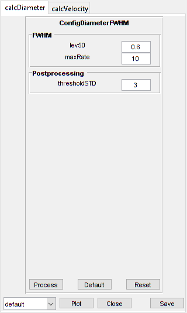

FrameScan
Analyse frame scan images of vessels
Contents
Usage
OBJ = FrameScan(NAME, RAWIMG, CONFIG, ISDS, COLS_V, ROWS_V, COLS_D)
Arguments
- NAME is the name for this FrameScan object.
- RAWIMG is the RawImg object that will be used to create the FrameScan object.
- CONFIG contains the configuration parameters needed for the calcVelocity and calcDiameter object.
- ISDS specifies whether the streaks to analyse are dark (i.e. negatively labelled) or bright (i.e. positively labelled).
- COLS_V specifies the left and right columns that will form the edges of the RawImg data to use in the velocity calculation.
- ROWS_V specifies the top and bottom rows that will form the edges of the RawImg data to use in the velocity calculation.
- COLS_D specifies the left and right columns that will form the edges of the RawImg data to use in the diameter calculation.
Details
FrameScan objects are used to analyse both the velocities and diameters from frame scan images of blood vessels. Typically, the blood plasma will be labelled by a fluorescent marker, like a dextran conjugated fluorophore (e.g. FITC, as in the figure below), but the method also works with labelled red blood cells (RBCs).

See Also
- FrameScan class documentation
- ConfigFrameScan class documentation
- ConfigVelocityRadon class documentation
- ConfigVelocityLSPIV class documentation
- ConfigDiameterFWHM class documentation
- CalcVelocityRadon class documentation
- CalcVelocityLSPIV class documentation
- CalcDiameterFWHM class documentation
- ImgGroup class documentation
- ImgGroup quick start guide
Examples
The following examples require the sample images and other files, which can be downloaded manually, from the University of Zurich website (http://www.pharma.uzh.ch/en/research/functionalimaging/CHIPS.html), or automatically, by running the function utils.download_example_imgs().
Create a FrameScan object interactively
The following example will illustrate the process of creating a FrameScan object interactively, starting with calling the constructor.
% Call the FrameScan constructor
fs01 = FrameScan()
Since no RawImg has been specified, the first stage is to select the type of RawImg to create. Press three and then enter to select the SCIM_Tif.
----- What type of RawImg would you like to load? -----
>> 1) BioFormats
2) RawImgDummy
3) SCIM_TifSelect a format: 3
A warning may appear about the pixel aspect ratio, but this is not relevant for FrameScan images.
Then, use the interactive dialogue box to select the raw image file framescan_scim.tif, which should be located in the subfolder tests>res, within the CHIPS root directory.

Use the interactive dialogue box to select the dummy calibration (calibration_dummy.mat):

The next stage is to define the 'meaning' of the image channels. The first channel represents the blood plasma. Press one and then enter to complete the selection.
----- What is shown on channel 1? -----
>> 0) <blank>
1) blood_plasma
2) blood_rbcsAnswer: 1
The next stage is to specify which velocity calculation algorithm should be used. In this case we will choose the Radon transform method. Press two and then enter to complete the selection.
----- What type of velocity calculation would you like to use? -----
>> 1) CalcVelocityLSPIV
2) CalcVelocityRadonSelect a format: 2
The next stage is to select the limits of the image to use for velocity calculations. Selecting left and right limits can be useful to exclude the edges where there can be artefacts associated with the scan mirrors changing speed and/or direction. Selecting top and bottom limits ensures that the velocity is only calculated inside the vessel.


The final stage is to select the left and right limits of the image to use for diameter calculations. This can be useful to exclude the edges where there can be artefacts associated with other vessels or fluorescent areas.

We have now created a FrameScan object interactively.
fs01 =
FrameScan with properties:
calcDiameter: [1x1 CalcDiameterFWHM]
colsToUseDiam: [21 110]
rowsToUseVel: [27 94]
plotList: [1x1 struct]
calcVelocity: [1x1 CalcVelocityRadon]
colsToUseVel: [20 112]
isDarkStreaks: 1
state: 'unprocessed'
name: 'framescan_scim'
rawImg: [1x1 SCIM_Tif]
isDarkPlasma: 0The process is almost exactly the same to create an array of FrameScan objects; when the software prompts you to select one or more raw images, simply select multiple images by using either the shift or control key.
Prepare a RawImg for use in these examples
% Prepare a rawImg for use in these examples fnRawImg = fullfile(utils.CHIPS_rootdir, 'tests', 'res', ... 'framescan_scim.tif'); channels = struct('blood_plasma', 1); fnCalibration = fullfile(utils.CHIPS_rootdir, 'tests', 'res', ... 'calibration_dummy.mat'); calibration = CalibrationPixelSize.load(fnCalibration); rawImg = SCIM_Tif(fnRawImg, channels, calibration);
Opening framescan_scim.tif: 100% [=================================]
Create a FrameScan object without any interaction
% Create a FrameScan object without any interaction nameFS02 = 'test FS 02'; configFS = ConfigFrameScan(ConfigVelocityLSPIV(), ConfigDiameterFWHM); isDarkStreaks = []; colsToUseVel = [20 112]; rowsToUseVel = [27 94]; colsToUseDiam = [21 110]; fs02 = FrameScan(nameFS02, rawImg, configFS, isDarkStreaks, ... colsToUseVel, rowsToUseVel, colsToUseDiam)
fs02 =
FrameScan with properties:
calcDiameter: [1x1 CalcDiameterFWHM]
colsToUseDiam: [21 110]
rowsToUseVel: [27 94]
plotList: [1x1 struct]
calcVelocity: [1x1 CalcVelocityLSPIV]
colsToUseVel: [20 112]
isDarkStreaks: 1
state: 'unprocessed'
name: 'test FS 02'
rawImg: [1x1 SCIM_Tif]
isDarkPlasma: 0
Create a FrameScan object with a custom config
% Create a FrameScan object with a custom config configCustom = ConfigFrameScan(... ConfigVelocityRadon('windowTime', 30, 'nOverlap', 6), ... ConfigDiameterFWHM('maxRate', 10, 'lev50', 0.6)); fs03 = FrameScan('test FS 03', rawImg, configCustom, ... isDarkStreaks, colsToUseVel, rowsToUseVel, colsToUseDiam); confDiam = fs03.calcDiameter.config confVel = fs03.calcVelocity.config
confDiam =
ConfigDiameterFWHM with properties:
lev50: 0.6000
maxRate: 10
thresholdSTD: 3
confVel =
ConfigVelocityRadon with properties:
windowTime: 30
nOverlap: 6
thetaMax: 90
thetaMin: -90
incrCoarse: 1
incrFine: 0.1000
rangeCoarse: 10
rangeFine: 3
tolCoarse: 8
maxNCoarse: 2
maxNFull: 1
minPeakDist: 5
thresholdProm: 0.3000
pointsSNR: 12
thresholdSNR: 3
thresholdSTD: 3
Create a FrameScan object array
% Create the RawImg array first
rawImgArray(1:3) = copy(rawImg);
rawImgArray = copy(rawImgArray)
rawImgArray =
1x3 SCIM_Tif array with properties:
filename
isDenoised
isMotionCorrected
metadata_original
name
rawdata
t0
metadata
% Then create the FrameScan object array fsArray = FrameScan('test FS Array', rawImgArray, configCustom, ... isDarkStreaks, colsToUseVel, rowsToUseVel, colsToUseDiam)
fsArray =
1x3 FrameScan array with properties:
calcDiameter
colsToUseDiam
rowsToUseVel
plotList
calcVelocity
colsToUseVel
isDarkStreaks
state
name
rawImg
isDarkPlasma
Process a scalar FrameScan object
% Process a scalar FrameScan object
fs03 = fs03.process()
Calculating velocity: 100% [=======================================]
Calculating diameter: 100% [=======================================]
fs03 =
FrameScan with properties:
calcDiameter: [1x1 CalcDiameterFWHM]
colsToUseDiam: [21 110]
rowsToUseVel: [27 94]
plotList: [1x1 struct]
calcVelocity: [1x1 CalcVelocityRadon]
colsToUseVel: [20 112]
isDarkStreaks: 1
state: 'processed'
name: 'test FS 03'
rawImg: [1x1 SCIM_Tif]
isDarkPlasma: 0
Process a FrameScan object array (in parallel)
% Process a FrameScan object array (in parallel). % This code requires the Parallel Computing Toolbox to run in parallel useParallel = true; fsArray = fsArray.process(useParallel); fsArray_state = {fsArray.state}
Processing array: 100% [===========================================]
fsArray_state =
'processed' 'processed' 'processed'
Plot a figure showing the output
% Plot a figure showing the output hFig03 = fs03.plot(); set(hFig03, 'Position', [50, 50, 800, 1000])
Produce a GUI to optimise the parameters
% Produce a GUI to optimise the parameters
hFigOpt = fs03.opt_config();
 Output the data
% Output the data. This requires write access to the working directory fnCSV03 = fs03.output_data('fs03', 'overwrite', true);
% First, the diameter data fID03_diameter = fopen(fnCSV03{1}, 'r'); fileContents03d = textscan(fID03_diameter, '%s'); fileContents03d{1}{1:5} fclose(fID03_diameter);
ans = time,diameter,maskSTD,mask ans = 0.083,138.032,FALSE,FALSE ans = 0.248,136.281,FALSE,FALSE ans = 0.413,135.157,FALSE,FALSE ans = 0.578,136.262,FALSE,FALSE
% Then, the velocity data fID03_velocity = fopen(fnCSV03{2}, 'r'); fileContents03v = textscan(fID03_velocity, '%s'); fileContents03v{1}{1:5} fclose(fID03_velocity);
ans = time,velocity,flux,lineDensity,linearDensity,yPosition,theta,estSNR,maskSNR,maskSTD,mask ans = 0.016,596.826,66.489,0.111,0.007,103,89.700,4.785,FALSE,TRUE,TRUE ans = 0.020,34.338,199.468,5.809,0.368,116,84.800,4.848,FALSE,FALSE,FALSE ans = 0.024,34.338,199.468,5.809,0.326,130,84.800,7.208,FALSE,FALSE,FALSE ans = 0.028,36.452,166.223,4.560,0.324,143,85.100,9.288,FALSE,FALSE,FALSE